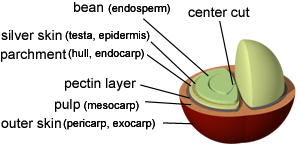
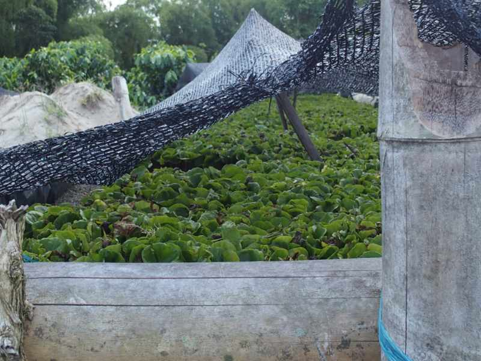

What is Coffee
cof·fee /ˈkôfē,ˈkäfē/
noun The berries harvested from species of Coffea plants.Botanical classification Coffee traces its origin to a genus of plants known as Coffea. Within the genus there are over 500 genera and 6,000 species of tropical trees and shrubs. Experts estimate that there are anywhere from 25 to 100 species of coffee plants. The genus was first described in the 18th century by the Swedish botanist, Carolus Linneaus, who also described Coffea Arabica in his Species Plantarum in 1753. Botanists have disagreed ever since on the exact classification, since coffee plants can range widely. They can be small shrubs to tall trees, with leaves from one to 16 inches in size, and in colors from purple or yellow to the predominant dark green. In the commercial coffee industry, there are two important coffee species — Arabica and Robusta. Coffea Arabica — C. Arabica Varieties: Bourbon, Typica, Caturra, Mundo Novo, Tico, San Ramon, Jamaican Blue Mountain Coffea Arabica is descended from the original coffee trees discovered in Ethiopia. These trees produce a fine, mild, aromatic coffee and represent approximately 70% of the world's coffee production. The beans are flatter and more elongated than Robusta and lower in caffeine. On the world market, Arabica coffees bring the highest prices. The better Arabicas are high grown coffees — generally grown between 2,000 to 6,000 feet (610 to 1830 meters) above sea level — though optimal altitude varies with proximity to the equator. The most important factor is that temperatures must remain mild, ideally between 59 - 75 degrees Fahrenheit, with about 60 inches of rainfall a year. The trees are hearty, but a heavy frost will kill them. Arabica trees are costly to cultivate because the ideal terrain tends to be steep and access is difficult. Also, because the trees are more disease-prone than Robusta, they require additional care and attention.
The Anatomy of a Coffee Cherry The beans you brew are actually the processed and roasted seeds from a fruit, which is called a coffee cherry. The coffee cherry's outer skin is called the exocarp. Beneath it is the mesocarp, a thin layer of pulp, followed by a slimy layer called the parenchyma. The beans themselves are covered in a paper-like envelope named the endocarp, more commonly referred to as the parchment. Inside the parchment, side-by-side, lie two beans, each covered separately by yet another thin membrane. The biological name for this seed skin is the spermoderm, but it is generally referred to in the coffee trade as the silver skin.

In about 5% of the world's coffee, there is only one bean inside the cherry. This is called a peaberry (or a caracol, or "snail" in Spanish), and it is a natural mutation. Some people believe that peaberries are actually sweeter and more flavorful than standard beans, so they are sometimes manually sorted out for special sale.10 Steps from Seed to Cup
The coffee you enjoy each day has taken a long journey to arrive in your cup. Between the time they’re planted, picked and purchased, coffee beans go through a typical series of steps to bring out their best.
-
Planting
A coffee bean is actually a seed. When dried, roasted and ground, it’s used to brew coffee. If the seed isn’t processed, it can be planted and grow into a coffee tree. Coffee seeds are generally planted in large beds in shaded nurseries. The seedlings will be watered frequently and shaded from bright sunlight until they are hearty enough to be permanently planted. Planting often takes place during the wet season, so that the soil remains moist while the roots become firmly established.